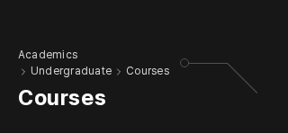
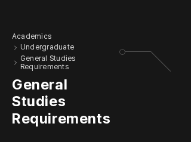
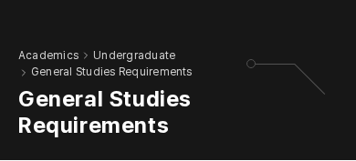
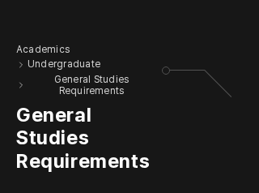
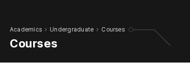

DS-041 · 긴 경로의 줄바꿈과 왼쪽 정렬
사용자 정렬 선택 반영 · 실제 적용·대표 검증 완료줄바꿈한 텍스트는 왼쪽에 정렬한다. BR-Q1에 대한 사용자 수정 지시를 반영했다. 구분 화살표와 다음 이름을 묶어 단계 단위로 줄바꿈하고, 긴 항목 안에서는 공백을 기준으로 줄바꿈한다.
글자 크기·문구·색·그래픽·링크의 이동 의도를 유지한다. 작은 화면 제목24px·데스크톱32px와 오른쪽 장식100px를 보존한다. 내용 생략이나 글자 축소 없이 화면 안에 담으며 경로·제목의 줄 수에 따라 높이는 늘 수 있다.
아래는 실제 앱 적용 이미지다. 8개 경로의 한영320/390/1280px 총48개 상태에서 가로 넘침이 없고 경로명이 모두 왼쪽 정렬임을 확인했다. 영어 대표6장이 왼쪽 정렬 견본과 바이트까지 일치했다. 실제 측정48개 기록.
먼저 · 확정 DS 실제 결과
DS-040 참가자 제목은 괄호 앞에서 줄바꿈하도록 적용했고, 한영3개 폭6장이 승인 견본과 일치했다. 다른 제목24개 장면은 기존과 같았다. 실제 적용 결과 · 누적 통합 검증.
변경 이유와 유지 범위
기존 긴 경로는 유사8개 경로의 한영320/390px,32상태 중13상태에서 문서가 화면보다 넓어졌다. 좌우20px 안에서 이름과 화살표를 묶어 줄바꿈해 읽을 수 있게 한다.
실제 앱은 텍스트와 경로 항목을 왼쪽에 정렬한다. 기존 그래픽 공간과 경로 줄 사이4px를 유지한다. 이전 중앙 정렬안은 아래 승인 전 기록으로 분리했다. 초점·키보드·에디터 내부·주요 로직 변경은 포함하지 않는다.
영어 교과목 · 왼쪽 정렬

320px · 왼쪽 정렬 실제 적용 · 승인 견본 일치 390px · 왼쪽 정렬 실제 적용 · 승인 견본 일치
390px · 왼쪽 정렬 실제 적용 · 승인 견본 일치영어 교양 과목 이수규정 · 왼쪽 정렬

320px · 왼쪽 정렬 실제 적용 · 승인 견본 일치
390px · 왼쪽 정렬 실제 적용 · 승인 견본 일치영어 교환/방문 프로그램 · 왼쪽 정렬
320px · 왼쪽 정렬 실제 적용 · 승인 견본 일치390px · 왼쪽 정렬 실제 적용 · 승인 견본 일치
현재 상태
DS-041은 사용자 정렬 선택을 반영해 적용·대표 검증했다. 한영 첫 경로 링크를 실제로 눌러 이동도 확인했다. 전체 읽기140개 회귀는 다시 실행 중이며 전체 통과를 뜻하지 않는다. 접근성 후속은 마지막에 진행한다.
원칙·이유·검증 범위 · 실제 적용 측정 · 왼쪽 정렬 승인 견본 측정이전 중앙 정렬 제안의 비교 기록
사용자 수정 지시 전 자료다. 현재 정렬은 위의 왼쪽 정렬 견본을 따른다. 이전 비교 측정.
영어 교과목 · 320px
현재 · 화면 밖으로 이어지는 경로/장식 이전 중앙 정렬 제안 · 의미 단위 줄바꿈, 기존24px 제목 유지
이전 중앙 정렬 제안 · 의미 단위 줄바꿈, 기존24px 제목 유지
긴 항목 · 교양 과목 이수규정320px
현재 · 화면 밖으로 이어지는 경로/장식
이전 중앙 정렬 제안 · 의미 단위 줄바꿈, 기존24px 제목 유지
교환/방문 프로그램 · 320px
현재 · 화면 밖으로 이어지는 경로/장식이전 중앙 정렬 제안 · 의미 단위 줄바꿈, 기존24px 제목 유지
한국어 경로에도 같은 문제
현재 · 입학이 한 글자씩 줄바꿈되고 오른쪽으로 넘침이전 중앙 정렬 제안 · 이름과 이동 대상 유지. 기존 영어 표기는 번역 변경 없이 그대로.
390px · 공간이 충분한 교과목

공간이 있으면 한 줄을 유지한다. 모든 경로를 강제로 여러 줄로 만들지 않는다.